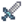
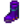
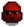
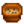
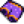

Minen
| Minen | |
 | |
 | |
| Ruhetage: | Niemals |
| Bewohner: | |
Die Minen befinden sich im nördlichen Bereich der Berge (nordöstlich des Schreinerladens und westlich der Abenteurergilde). Der Zugang ist bis zum 5. Frühling des ersten Jahres verschüttet, der Spieler erhält hierzu einen Brief.
Übersicht
Die Minen bestehen zum größten Teil aus Felsen und Erde. In den Felsen kann der Spieler Erze und Mineralien finden, wenn sie mit einer Spitzhacke aufgeschlagen werden. Die Art und Seltenheit der Minerale wechselt mit jeder Ebene. Durch Umgraben der Erde können seltene Artefakte gefunden werden, die für die vollständige Museumskollektion nötig sind.
Vorsicht ist geboten, denn die Minen sind Heimat verschiedenster Monster, die den Spieler bei Sichtkontakt attackieren. Sie tragen einzigartige Beute mit sich, die ebenfalls für die Museumskollektion benötigt wird. Wichtig ist also eine entsprechende Vorbereitung, wenn man die Minen betritt.
Um tiefer in die Minen vorzudringen, muss der Spieler auf jeder Ebene eine Leiter finden. Die Leiter befindet sich häufig unter einem Stein oder erscheint, nachdem ein Monster besiegt wurde. Wenn eine Ebene von Monstern "verseucht" ist oder "es vor Monstern wimmelt", müssen erst alle Feinde auf dieser Ebene besiegt werden, damit eine Leiter erscheint.
Wenn der Spieler mindestens Stufe 2 in der Minenarbeit-Fähigkeit erreicht hat, können Ebenen mit Treppen (Baukosten von 99 Steinen) einfach übersprungen werden. Eine Treppe ermöglicht sofortigen Zugang zur nächsten Ebene. Auf jeder 5. Ebene erscheint ein Aufzug, der ab nun direkten Zugang zu dieser Ebene vom Eingang aus ermöglicht und damit wie eine Art Checkpoint fungiert.
Falls der Spieler in den Minen ohnmächtig wird gehen 10% des Goldes des Spielers verloren bis Maximal  1.000 G. Wenn er ohnmächtig wird aufgrund von mangelnder Gesundheit verliert der Spieler zwischen 5 % und 25 % des Goldes (bis zu einem Maximum von
1.000 G. Wenn er ohnmächtig wird aufgrund von mangelnder Gesundheit verliert der Spieler zwischen 5 % und 25 % des Goldes (bis zu einem Maximum von  15.000 G).[1] Ebenso verschiedene Gegenstände, darunter Waffen, Werkzeuge und auch einzigartige Gegenstände (mit Ausnahme des Galaxie-Schwertes und Ringe). Wenn Werkzeuge verloren gehen, erhält man diese am nächsten Tag per Post zurück, mit Ausnahme der Angeln und Waffen. Nachdem der Spieler in den Minen ohnmächtig geworden ist, erwacht er in der Eingangshalle der Mine, gefunden von einem der Dorfbewohner.
15.000 G).[1] Ebenso verschiedene Gegenstände, darunter Waffen, Werkzeuge und auch einzigartige Gegenstände (mit Ausnahme des Galaxie-Schwertes und Ringe). Wenn Werkzeuge verloren gehen, erhält man diese am nächsten Tag per Post zurück, mit Ausnahme der Angeln und Waffen. Nachdem der Spieler in den Minen ohnmächtig geworden ist, erwacht er in der Eingangshalle der Mine, gefunden von einem der Dorfbewohner.
Verlorene Gegenstände werden von Marlon in der Abenteurergilde aufgehoben. Ein einzelner verlorener Gegenstand kann dort jederzeit nach einem Ohnmachtsanfall aufgrund niedriger Gesundheit erworben werden. Die Kosten entsprechen dem Basis-Verkaufspreis des Gegenstandes ("d.h.," das Gold, das man durch den Verkauf des Gegenstandes erhalten würde). Marlons Objektwiederherstellungsdienst bleibt bis zum nächsten Verlust von Gegenständen in den Minen bestehen, wobei bereits verlorene Gegenstände durch neu verlorene ersetzt werden.
Eine Lore befindet sich in der Eingangshalle für schnelle Fahrten zu und von den Minen. Sie wird durch die Vervollständigung aller Heizraum-Bündel repariert, oder kann vom Joja Gemeindeentwicklungsformular gekauft werden.
Inhalte
Ebenen
Die Minen bestehen aus 120 Ebenen. Diese Ebenen sind in drei Abschnitte unterteilt, jeweils 40 Ebenen haben ein gemeinsames Thema: Der erste Abschnitt besteht aus brauner Erde, der zweite Abschnitt aus gefrorener Erde und der dritte und letzte Abschnitt besteht aus Lava und violetter Erde. Die letzten zehn Ebenen eines jeden Abschnittes besteht aus einer Variation des Hauptthemas: Der erste Abschnitt (Ebene 31-39) hat ein Schattenthema, der zweite Abschnitt (70-79) hat ein Eisschloßthema, und der dritte Abschnitt (110-119) hat ein blutrotes Thema.
Die entsprechenden Ebenen in jedem Abschnitt haben oft den gleichen Aufbau. Zum Beispiel haben die Ebene 1, 41 und 81 den gleichen Aufbau; ebenso die Ebenen 2, 42 und 82 usw.
| Ebene | Thema | Gegner | Schätze | Bemerkungen |
|---|---|---|---|---|
| Eingang | Braune Erde | Keine | Hier befindet sich die Lore. Der Zwerg lebt hinter dem verschütteten östlichen Durchgang (mit einer Stahl-Spitzhacke oder einer Kirschbombe kann man ihn freiräumen). | |
| 1 - 9 | Braune Erde | Hier gibt es: | ||
| 10 | Braune Erde | Keine | ||
| 11 - 19 | Braune Erde, Unkraut | Ebene 19 ist spiralförmig angelegt. | ||
| 20 | Braune Erde, Unkraut | Keine | Fischen: | |
| 21 - 29 | Braune Erde, Unkraut | |||
| 30 | Braune Erde | Keine | kein Schatz | |
| 31 - 39 | Schatten, Graue Erde | |||
| 40 | Gefrorene Erde | Keine | ||
| 41 - 49 | Gefrorene Erde | |||
| 50 | Gefrorene Erde | Keine | Ab hier gibt es nun die Wahrscheinlichkeit, einen Jede Ebene nach 50 erhöht die Wahrscheinlichkeit um 0,016% (d.h. 1 von 100 Steinen auf Ebene 100). | |
| 51 - 59 | Gefrorene Erde | Durch die extrem vielen Staubgeister gibt es hier | ||
| 60 | Gefrorene Erde | Keine |  Kristalldolch | Fischen: |
| 61 - 69 | Gefrorene Erde | |||
| 70 | Eisschloss | Keine | ||
| 71 - 79 | Eisschloss | |||
| 80 | Lava, Violette Erde | Keine | ||
| 81 - 89 | Lava, Violette Erde | |||
| 90 | Lava, Violette Erde | Keine | ||
| 91 - 99 | Lava, Violette Erde | Ab hier werden Staubgeister (und mit ihnen Kohle) seltener. | ||
| 100 | Lava, Violette Erde, Unkraut | Keine | Fischen: | |
| 101 - 109 | Lava, Violette Erde, Unkraut | |||
| 110 | Lava, Blutrote Erde | Keine |  Weltall-Stiefel | |
| 111 - 119 | Lava, Blutrote Erde | |||
| 120 | Lava, Violette Erde Unkraut | Keine | Finale Ebene |
Ebenen (gefährlich)
Wenn die gefährliche Einstellung in den Minen aktiv ist (entweder weil der Auftrag "Gefahr aus der Tiefe" aktiv ist oder weil der Schrein der Herausforderung aktiviert worden ist, unterscheiden sich Bodendesign, Sammelbares und Monster von den normalen Minen. Gestapelte Schleime können auf jedem Level erscheinen und werden entsprechend der normalen Schleimfarbe dieses Levels gefärbt.
| Ebene | Motiv | Gegner | Schätze | Hinweise |
|---|---|---|---|---|
| Entrance | Braune Erde | None | Hier befindet sich eine Lore. Zum Zwerg durch den blockierten Durchgang im Osten. (Eine Stahlspitzhacke oder eine beliebige Bombe ist erforderlich, um das Hindernis zu durchbrechen.) | |
| 1 - 9 | Blaue Erde | Kupfererz beginnt ab Ebene 2 zu erscheinen. Gefundene Edelsteine: Amethyst, Topas, Quarz und Erdkristall. Alle Edelsteine außer Diamanten werden gefunden, wenn der Spieler den Grund der Minen erreicht hat. Sammelbares Strandgut wie Seetang, Korallen, Nautilusmuscheln, Regenbogenmuscheln, Austern, Herzmuscheln und Venusmuscheln tauchen auf. Es besteht eine sehr geringe Chance, dass eine Perle gefunden werden kann. Radioaktives Erz beginnt auf jeder Ebene zu erscheinen, die kein Vielfaches von 5 ist. | ||
| 10 | Blaue Erde | Keine | ||
| 11 - 19 | Blaue Erde, Unkraut | In der 12. Ebene befindet sich am Ende des Weges eine Lore mit 6 Stück Kohle. Garantierte Leiter am Ende der Ebene, auch wenn die Ebene verseucht ist. Auf der 18. Ebene befindet sich unten rechts eine Lore mit 6 Stück Kohle. Ebene 19 ist spiralförmig angeordnet. | ||
| 20 | Blaue Erde | Keine | Fischen: Indischer Glaswels, Steinfisch, Höhlengelee | |
| 21 - 29 | Blaue Erde, Unkraut | Auf Ebene 28 befindet sich unten rechts auf der Ebene eine Lore mit 6 Stücken Kohle. | ||
| 30 | Schatten, Schwarze Erde | Keine | Kein Schatz | |
| 31 - 39 | Schatten, Schwarze Erde | Kupfererz, Geoden sind verbreitet. Auf der 38. Ebene befindet sich oben links eine Lore mit 6 Stücken Kohle. | ||
| 40 | Magischer Wald | Keine | ||
| 41 - 49 | Magischer Wald | Eisenerze, Gefrorene Geoden, Aquamarine und Jade beginnen zu erscheinen. Mahagonibäume, Holz, Große Baumstümpfe, Große Baumstämme, Unkraut und Gras erscheinen neben sammelbarem Waldessen wie Roten Pilzen, Straußfarn, Morcheln, Violetten Pilzen und Pfifferlingen. | ||
| 50 | Magischer Wald | None | Diamanten beginnen zu erscheinen (1 von 500 Steinen). Jede Ebene nach 50 erhöht die Häufigkeit um 0,00016 (z.B. 1 von 100 Steinen auf Ebene 100). | |
| 51 - 59 | Magischer Wald, Spinnenweben | Zahlreiche Spinnweben, die die Spieler verlangsamen, wenn sie sich darin verfangen. Auf der 52. Ebene befindet sich am Ende des Weges einen Beutel mit 6 Stück Kohle. Garantierte Leiter am Ende der Ebene, auch wenn der Boden verseucht ist. Auf Ebene 58 befindet sich unten rechts auf der Ebene ein Beutel mit 6 Stück Kohle. Ebene 59 ist spiralförmig angelegt. Ebenen sind deutlich dunkler als 40 – 50 und haben einen Nebeleffekt. | ||
| 60 | Magischer Wald | Keine | Kristalldolch | Fischen: Eis-Pip, Indischer Glaswels, Höhlengelee |
| 61 - 69 | Magischer Wald, Spinnenweben | Auf Ebene 68 befindet sich unten rechts auf der Ebene ein Beutel mit 6 Stück Kohle. | ||
| 70 | Knochenburg | Keine | ||
| 71 - 79 | Knochenburg | Auf Ebene 78 befindet sich oben links auf der Ebene ein Beutel mit 6 Stücken Kohle. Gefrorene Träneen beginnen zu erscheinen. | ||
| 80 | Pilze, Pinke Erde | None | ||
| 81 - 89 | Pilze, Pinke Erde |  Red Slime Dangerous |
Smaragde, Feuer-Quarze, Golderze, Magma-Geoden und Rubine beginnen zu erscheinen. Monster können sich im Gras verstecken, das hier erscheint. | |
| 90 | Pilze, Pinke Erde | Keine | ||
| 91 - 99 | Pilze, Pinke Erde, Unkraut | Red Slime Dangerous |
Auf der 92. Ebene steht am Ende des Weges eine Lore mit 6 Stücken Kohle. Garantierte Leiter am Ende der Ebene, auch wenn die Ebene verseucht ist. Auf der Ebene 98 befindet sich unten rechts auf der Ebene eine Lore mit 6 Stück Kohle. Ebene 99 ist spiralförmig angelegt. Das Durchqueren der Ebenene kann aufgrund der zahlreichen Unkräuter und Gräser, die dort erscheinen, schwierig sein. | |
| 100 | Pilze, Pinke Erde | None | Fischen: Lava-Aal, Höhlengelee | |
| 101 - 109 | Pilze, Pinke Erde, Unkraut | Red Slime Dangerous |
Mystische Steine beginnen zu erscheinen. Auf der Ebene 108 befindet sich unten rechts auf der Etage eine Lore mit 6 Stücken Kohle. | |
| 110 | Lava, Rotbraune Erde | Keine | Weltall-Stiefel | |
| 111 - 119 | Lava, Rotbraune Erde | Red Slime Dangerous |
Magma-Geoden sind weit verbreitet. Auf der Ebene 118 befindet sich oben links eine Lore mit 6 Stücken Kohle. | |
| 120 | Pilze, Pinke Erde | None | Letzte Ebene |
Remixed Minenbelohnungen
Wenn bei Spielstart in den erweiterten Optionen "remixed Minenbelohnungen" ausgewählt wurden führt dies dazu, dass jede Belohnungsebene zufällige Belohnungen aus der folgenden Auslistung enthalten. Jede Ebenen haben auch die Möglichkeit eine normale Belohnung zu enthalten.
| Ebene | Mögliche Belohnungen | Bemerkung |
|---|---|---|
| 10 | ||
| 20 | ||
| 30 | Keine Belohnung | Unverändert |
| 40 | Unverändert | |
| 50 | ||
| 60 | ||
| 70 | Unverändert | |
| 80 | ||
| 90 | ||
| 100 | Unverändert | |
| 110 | ||
| 120 | Unverändert |
Leitern
Leitern können beim Töten von Monstern[2], unter Steinen[3] oder natürlich auftreten[4].
Nachdem eine Ebene geladen wurde, besteht eine Wahrscheinlichkeit von 95%, dass eine Leiter mitgeneriert wird. Der Fleck wird zufällig ausgewählt, und wenn er nicht besetzt ist (z.B. von einem Stein), wird die Leiter platziert. Dadurch können keine weiteren Leitern mehr gefunden werden.
Jedes getötete Monster kommt mit der geringen Wahrscheinlichkeit von 15%, eine Leiter nach seinem Ableben erscheinen zu lassen, vorausgesetzt, der Feind wurde über einem freien Feld getötet. Weitere 7% werden mit der Stärkung "Statue des Zwergenkönigs" hinzugefügt, die eine größere Chance bietet, Leitern zu finden, wodurch sich die Wahrscheinlichkeit von 15 % auf 22 % erhöht.[2] Leitern können danach aber immer noch unter Steinen gefunden werden.
Einige Ebenen haben bereits Leitern vorgeladen (12, 52, 92, Schatzkisten-Ebenen in der Schädelhöhle). Auch hier können Leitern immer noch unter Steinen gefunden werden.
Jeder zerstörte Stein hat die Chance, eine Leiter hervorzubringen, was umso wahrscheinlicher wird, je weniger Steine übrig sind. Wenn dies gelingt, erscheint eine Leiter und verhindert, dass weitere Leitern von Felsen auftauchen. (Im Gegensatz dazu besteht in der Schädelhöhle eine Chance von 20 %, dass ein Schacht anstelle einer Leiter erscheint, und dies verhindert nicht, dass weitere Leitern/Schächte aus Felsen entstehen.)
Im Detail: Jeder zerstörte Stein hat eine Grundchance von 2%, eine Leiter zu spawnen. Dies wird durch Tägliches Glück / 5 (+/- 10% / 5 = +/- 2%) angepasst, bestenfalls um 2,5 % ansteigend (davon kommen 0,5 % durch das Besondere Amulett hinzu) oder im schlimmsten Fall um 2 % abnehmen. Es wird auch durch Glücksboni angepasst, ob ein Stockwerk einen Gegner hat, und durch den Bonus der Statue des Zwergenkönigs, der eine größere Chance gibt, Leitern und Schächte zu finden. Essensboni addieren 1% für jeden Glückspunkt dazu. Ein hypothetischer Spieler mit maximalem Tagesglück und einem Glücks-Bonus von +1 hätte daher eine Grundchance von 2 + 2,5 + 1 = 5,5 %, für jeden zerstörten Stein eine Leiter hervorzubringen. Die Umkehrung der Anzahl der nach dem Auftreffen des Steins verbleibenden Steine wird addiert (z. B. 5 verbleibende Steine - 1/5 = 0,2 = 20%, 100 verbleibende Steine = 1/100 = 0,01 = 1%). Wenn keine Feinde mehr übrig sind, werden 4% hinzugefügt. Wenn diese Wahrscheinlichkeit getroffen wird, erscheint eine Leiter und verhindert, dass weitere Leitern aus Felsen herausspringen. Wenn man sich in der Schädelhöhle befindet, besteht eine Wahrscheinlichkeit von 20%, dass stattdessen ein Schacht erscheint, weitere Schächte und Leitern können danach immer noch gefunden werden. [5]
Kisten und Fässer
Kisten und Fässer in den Minen lassen bei Zerstörung Gegenstände fallen. Kisten und Fässer unterscheiden sich über mögliche Inhalte nicht. Es kann nur ein Gegenstand pro Behälter gefunden werden, dieser kann jedoch mehrfach fallen.
Die meisten Behälter kehren zurück, wenn man eine Ebene betritt.[6] Behälter auf Platformen in den Minen treten jedoch nur beim ersten Betreten der Ebene auf. Nach dem Zerstören der Behälter kehren diese nicht auf die Platformen zurück.
Einige Gegenstände ersetzen andere, je nachdem ob der Minengrund erreicht wurde. Werden zwei Werte angegeben steht der erste für die Wahrscheinlichkeit vor Erreichen des Minengrundes, und the zweite danach. Die möglichen Gegenstände aus Kisten und Fässern haben folgende Raten:[7]:
| Gegenstand | 0-39 | 40-79 | 80+ (inklusive Schädelhöhle) | Gefährliche Minen/Schädelhöhle
(Kann mehrere Gegenstande enthalten) |
|---|---|---|---|---|
| Nichts | 41.42% | 41.42% | 42% | 44% |
| 9.24% | 9.24% | 5.2% | 8% | |
| 9.24% | 4.62% | 5.2% | 0% | |
| 2.24% | 2.24% | 1.87% | 0% | |
| 2.31%/0% | 2.31%/0% | 0% | 2%/0% | |
| 4.62% | 4.62% | 0% | 0% | |
| 4.62% | 4.62% | 5.2% | 4% | |
| 4.62% | 4.62% | 5.2% | 4% | |
| 0% | 4.62% | 5.2% | 4% | |
| 0% | 0% | 5.2% | 4% | |
| 0% | 0% | 0% | 0.68% | |
| 7.8% | 7.8% | 7.8%/5.2% | 0% | |
| 4.84% | 0% | 0% | 0% | |
| 0% | 4.84% | 0% | 0% | |
| 0% | 0% | 2.6% | 0% | |
| 0% | 0% | 1.87% | 4% | |
| 2.24% | 0% | 0% | 0% | |
| 2.24% | 0% | 0% | 0% | |
| 0% | 2.24% | 0% | 4% | |
| 0% | 2.24% | 0% | 4% | |
| 0% | 0% | 1.87% | 0% | |
| 0% | 0% | 1.87% | 0% | |
| 0% | 0% | 5.2% | 0% | |
| 0% | 0% | 1.87% | 0% | |
| 0%/4.62% | 0% | 0% | 4% | |
| 0% | 0%/4.62% | 0% | 0%/4% | |
| 0% | 0% | 0%/2.6% | 0% | |
| 2.31%/0% | 0% | 0% | 2%/0% | |
| 0% | 2.31%/0% | 0% | 0% | |
| 0% | 0% | 0% | 0.23% | |
| 0% | 0% | 0% | 0.23% | |
| 0% | 0% | 0% | 0.23% | |
| 0% | 0% | 0% | 4% | |
| 0% | 0% | 0% | 4% | |
|  Tom Kha-Suppe | 0% | 0% | 0% | 0.15% |
| 0% | 0% | 0% | 0.15% | |
| 0% | 0% | 0% | 0.15% | |
| 0% | 0% | 0% | 0.15% | |
| 0% | 0% | 0% | 0.15% | |
| 0% | 0% | 0% | 0.15% | |
| 0% | 0% | 0% | 0.15% | |
| 0% | 0% | 0% | 0.15% | |
| 0% | 0% | 0% | 0.15% | |
| 0% | 0% | 0% | 0.15% | |
| 0% | 0% | 0% | 0.15% | |
| 0% | 0% | 0% | 0.15% | |
| 0% | 0% | 0% | 0.15% | |
| 0% | 0% | 0% | 0.15% | |
| 0% | 0% | 0% | 0.15% | |
| 0% | 0% | 0% | 0.15% | |
| 0% | 0% | 0% | 0.15% | |
| 0% | 0% | 0% | 0.15% | |
| 0% | 0% | 0% | 0.15% | |
| 0% | 0% | 0% | 0.15% | |
| 0% | 0% | 0% | 0.15% | |
| 0% | 0% | 0% | 0.15% | |
| 0% | 0% | 0% | 0.15% | |
| 0% | 0% | 0% | 0.15% | |
| 0% | 0% | 0% | 0.15% | |
| 0% | 0% | 0% | 0.15% | |
| 0% | 0% | 0% | 0.15% | |
| 0% | 0% | 0% | 0.54% | |
|  Beschnittene lila Glücksshorts | 0% | 0% | 0% | 0.68% |
| Spezielle Gegenstände (Siehe unten) |
2.24% | 2.24% | 1.87% | 0% |
Spezielle Gegenstände
Ein kleiner Anteil von Kisten & Fässern (2,2%) lassen folgende spezielle Gegenstände fallen[8]. Visuell unterscheiden sie sich nicht nach Inhalt.
Die speziellen Gegenstände können auch von Monstern erhalten werden. Ungefähr 1,2% von Schleimen sind als besondere Schleime mithilfe des goldenen Sterns identifierbar. Alle anderen Monster haben weniger als 0,2% Wahrscheinlichkeit einen speziellen Gegenstand fallen zu lassen, sind jedoch nicht visuell identifierbar.
Umgrabbare Erde
Die folgende Tabelle zählt alle Gegenstände auf, die beim Umgraben von Erde in den Minen gefunden werde können [9]. Dabei spielt es keine Rolle, ob die Erde mit einer Hacke oder mit Bomben umgegraben wird.
| Gegenstand | Wahrscheinlichkeit |
|---|---|
| Nichts | 85.9% |
| Zwergenschriftrolle I | 0.16% |
| Verlorenes Buch/Gemischte Saat | 0.16% |
| Rostiger Löffel | 0.16% |
| Rostiger Sporn | 0.16% |
| Skelett-Schwanz | 0.16% |
| Zwergischer Helm (nur auf Ebene 1-40) | 0.1% |
| Zwergenschriftrolle II (nur auf Ebene 1-40) | 0.1% |
| Zwergengerät (nur auf Ebene 41-80) | 0.1% |
| Goldbarren (nur auf Ebene 41-80) | 0.1% |
| Zwergenschriftrolle IV (nur auf Ebene 81-120) | 0.2% |
| Merkwürdige Puppe (gelb) | 0.03% |
| Merkwürdige Puppe (grün) | 0.03% |
| Stein | 1.33% |
| Erz (je nach Ebene) | 1.33% |
| Lehm | 4.68% |
| Omni-Geode | 0.17% |
| Geode (je nach Ebene) | 0.51% |
| Höhlenkarotte | 5.03% |
Verseuchte Ebenen

Gelegentlich betritt man eine verseuchte Ebene, die mit Schleimen oder einer Mischung von diversen Monstern bevölkert ist. Im Gegensatz zu normalen Ebenen gibt es keine Felsen und in schleim-verseuchten Ebenen sind die Wände und Böden mit grünem Schleim bedeckt. Sammelbare Gegenstände wie Quarze oder Pilze können hier trotzdem gefunden werden. Um von einer verseuchten Ebene weiter nach unten zu kommen, müssen alle Monster besiegt werden (Buddler verstecken sich oft unterirdisch in Erdbereichen). Beachte, dass ein Fehler dazu führt, dass die garantierte Leiter auf den Ebenen 12, 52 und 92 trotzdem erscheint, wenn die Ebene geladen wird, selbst wenn diese Ebene verseucht ist. Die Leiter erscheint in der Regel dort, wo das letzte Monster besiegt wurde oder neben dem Eingang, wenn sie neben dem Eingang auftaucht erhält der Spieler eine Nachricht: "Ein Weg nach unten hat sich geöffnet.".
Eine Treppe kann auch verwendet werden, um einer verseuchten Ebene zu entkommen.
Der Knoblauchöl Buff verhindert, dass Ebenen verseucht werden. Um einem Befall vorzubeugen, muss Knoblauchöl vor dem Betreten des Bodens konsumiert werden.
In seltenen Fällen kann es vorkommen, dass sich auf einer verseuchten Ebene keine Monster befinden. In diesem Fall erscheint kurz nach dem Betreten des Stockwerks neben dem Eingang eine Leiter mit der Meldung "Ein Weg nach unten hat sich geöffnet."
Es gibt kein Muster dafür, wann verseuchte Ebenenauftreten, aber diese bleiben den ganzen Tag verseucht. Verseuchte Ebenen können weder auf Aufzugsebenen (Ebenen, die mit 0 oder 5 enden) erscheinen, noch können sie auf den ersten 5 Ebenen, der 19. Ebene oder den letzten 10 jedes Abschnitts der Mine erscheinen.[10] Dazu gehören die Ebenen 1–4, 41–44, 81–84 (die ersten 5), die Ebenen 19, 59, 99 (das 19.) und die Ebenen 31–39, 71–79, 111–119 (die letzten 10) sowie die Ebenen der Schädelhöhle, die den gleichen Grundriss wie diese Ebenen haben. Unter Berücksichtigung dieser Regeln können verseuchte Ebenen auf den folgenden Stockwerken der Minen erscheinen: 6–9, 11–14, 16–18, 21–24, 26–29, 46–49, 51–54, 56–58, 61–64, 66–69, 86–89, 91–94, 96–98, 101-104, 106-109.
Das häufige Betreten von verseuchten Ebenen ist eine hervorragende Methode, um die Ziele für die Monsterjagd der Abenteurergilde schnell zu absolvieren.
Schwärme
Es gibt zwei verschiedene Arten von Schwärmen, die auftreten können, wenn sich der Spieler nicht auf einer Minenebene befindet, die durch 5 teilbar ist.
- Einzelnes Auftreten: Alle zehn Minuten besteht eine Chance von 8,9 %, dass eines der fliegenden Monster der aktuellen Ebene außerhalb des Bildschirms erscheint und angreift. Auf verseuchten Ebenen und in der Steinbruchmine erhöht sich die Chance auf 10 %. Der Knoblauchöl Buff verhindert, dass diese auftreten.[11]
- Schwarm: Alle zehn Minuten besteht eine Chance von 1,1 %, dass der Bildschirm "dunstig", "schimmernd" oder "neblig" wird, wenn der Spieler sich nicht auf einem von verseuchten Ebene und nicht in der Steinbruchmine befindet. Dieser Effekt hält 30-40 Sekunden an. Während dieser Zeit erscheinen mehrere der fliegenden Monster der aktuellen Ebene und greifen an. Der Knoblauchöl Buff verhindert diese Nebel.[11]
Die Pilzebene

In manchen Fällen kann eine Ebene in den unteren Teilen der Minen (Ebenen 81-119) eine stark erhöhte Chance haben rote und violette Pilze erscheinen zu lassen. Diese Ebenen haben außerdem eine auffällige Menge an farbigen Laternen, normalerweise mindestens eine davon grün. Während eines Spieltages werden die Pilze auf diesen Ebenen weiter wachsen, sogar wenn der Spieler das Spiel beendet und neustartet. So können auf diese Weise große Mengen an Pilzen gesammelt werden.
Bei jeder Ebene im untersten Bereich der Mine (Etagen 81–119), mit Ausnahme der Aufzugsetagen, besteht eine Chance von 3,5 %, dass sie als Pilzebene generiert wird, sofern dieselbe Ebene nicht bereits am selben Tag als solche generiert wurde.[12]
Aufgrund der Art, auf die das Spiel derartige Ebenen festlegt, "wandern" Pilzebenen jeden Tag eine Ebene "nach oben". Wenn zum Beispiel an Frühling 5 eine Pilzebene auf Ebene 94 liegt, dann wird sie sich einen Tag später, Frühling 6, auf Ebene 93 befinden. Auf diese Weise kann der Spieler die Position der Pilzebene nachverfolgen und freiwillig nur dann aufsuchen, wenn sie sich direkt eine Ebene unter einer Aufzugsstufe befindet. Hierbei ist zu beachten, dass Pilzeben nicht auf Aufzusebenen (Ebenen die mit 0 oder 5 enden) oder verseuchten Ebenen erscheinen. Außerdem sind Pilzebenen weder einzigartig noch garantiert. Es ist daher möglich, dass es mehrere Pilzebenen gleichzeitig gibt, oder aber auch keine, und dass diese Situation für mehrere Tage oder Wochen anhält.
Verließebene

Verließebene sind eine Art Ebene, die in ihrem Aussehen dem einzelnen Ebene des Steinbruchbergwerks ähnelt. Jede geeignete Ebene in den Minen hat eine Chance von 4,4 %, als Verließebene zu entstehen, nachdem die Steinbruchmine betreten wurde.[10] Diese Ebenen haben die gleichen Feinde und Steine wie die Steinbruchmine und können oft erheblich härter sein als die Ebenen, die sie ersetzen. DungeonEbenen werden niemals befallen.[10]
In den gefährlichen Minen können Verließebenen erscheinen, sobald der Spieler die Steinbruchmine betreten hat. Gefährliche Verließebenen erzeugen Gefährliche Schleime anstelle von Kupfer- und Eisen-Slimes, und die Schleime haben die Farbe, die diesem Abschnitt der gefährlichen Mine entspricht. Gefährliche Spukende Schädel erscheinen anstelle Spukender Schädel, genau wie auf den Ebenen 71–79 der gefährlichen Mine. Während Steine hauptsächlich wie in der Steinbruchmine erscheinen, besteht auch die Möglichkeit, dass auf diesen Ebenen Radioaktive Adern generieren.
Wie bei befallenen Ebenen bleiben Verließebenen den ganzen Tag lang als Verließebenen bestehen und können nicht auf Aufzugs-Ebenen oder im ersten Stock erscheinen. Im Gegensatz zu verseuchten Ebenen können Verließebenen jedoch auf den Ebenen 2–4, 19 und 31–39, 42–44, 59 und 71–79, 82–84, 99 und 111–119 erscheinen (mit Ausnahme der Ebenen 35, 75 und 115, da es sich um Aufzugs-Ebenen handelt).
Spieler ohne hochwertige Werkzeuge oder Waffen könnten von der Verwendung einer Treppe profitieren, um diese Stockwerke zu überspringen und Zeit zu sparen.
Die finale Ebene
Auf dem Grund der Minen (Ebene 120) befindet sich in einer Kiste der Schädelschlüssel. Dieser Schlüssel wird dazu benutzt, um die Schädelhöhle in der Wüste aufzuschließen. Mit ihm wird außerdem auch der Junimo-Kart-Spielautomat in der Kneipe zum Sternenfall freigeschaltet.
Weiterhin werden durch das Erreichen des Ende der Minen einige Dinge im Spiel geändert (eingeführt in 1.3.27):
- Prismatische Scherben und Diamanten können nun (selten) von jedem Monster fallen gelassen werden;
- Edelsteine können nun in Mülleimern gefunden werden;
- Edelsteine können nun von den Dorfbewohnern in Aufträgen angefordert werden;
- Unabhängig von der Etage können Edelsteinadern jeden der folgenden Edelsteine fallen lassen: Smaragd, Aquamarin, Rubin, Amethyst, Topas und Jade;
- einige Monster sind nun stärker.[13] Im Detail:
- Verteidigung wird um 50 % erhöht.
- Die Chance, einen Treffer zu verpassen (d. h. dass ein Treffer keinen Schaden verursacht), wird verdoppelt.
- HP wird um einen zufälligen Wert zwischen 0 und 100 % erhöht.
- Der Schaden wird um einen zufälligen Wert zwischen 0 und 50 % erhöht.
Schrein der Herausforderung

Der Schrein der Herausforderung ist erst verfügbar, nachdem der Spieler das Geheime Walnusszimmer von Mr. Qi auf der Ingwerinsel betreten und dort die Herausforderung "Gefahr aus der Tiefe" absolviert hat.
Danach befindet sich der Schrein der Herausforderung auf Stufe 120 der Minen. Er kann aktiviert werden und ändert den Aufbau und die Schwierigkeit der Mine zwischen normal und "gefährlich". Nach Aktivierung tritt die Änderung am nächsten Tag in Kraft.
Während die gefährliche Einstellung aktiv ist können Radioaktive Adern gefunden werden.
An dem Tag, an dem der Spieler die Quest "Gefahr aus der Tiefe" zum ersten Mal abschließt, kann am Schrein eine Notiz von Herrn Qi gefunden werden, die besagt, dass er den Schrein vorübergehend deaktiviert hat und der Spieler morgen wiederkommen kann.
Schwierigkeitsgrade
Die Minen können auf zwei Arten schwieriger gemacht werden. Eine Möglichkeit ist die Quest „Gefahr in der Tiefe“, die andere ist die Nutzung des Altars der Herausforderungen (oben). Diese Effekte können sich stapeln. Wenn keiner der beiden aktiv ist, beträgt der Schwierigkeitsgrad 0. Ist einer aktiv, aber nicht beide, beträgt der Schwierigkeitsgrad 1. Sind beide aktiv, beträgt der Schwierigkeitsgrad 2.
Während dies hauptsächlich als Umschaltung zwischen den normalen Minen (Schwierigkeit 0) und den „gefährlichen“ Minen (Schwierigkeit > 0) dient, gibt es einige Effekte, die sich stapeln. Wenn beide aktiv sind, erhöht sich die Wahrscheinlichkeit für:
- das Finden von Radioaktivem Erz;
- das Erscheinen von Monstern;
- das Spawnen von Schleimen als gestapelte Schleime;
- Spinnen, die in Paaren auftauchen (was zu mehr Spinnen führt);
- besiegte Monster, die Diamanten und Prismatische Scherben fallen lassen.
Diese gestapelte Schwierigkeit verstärkt zudem die Monster (mehr Schaden, mehr Gesundheit, mehr Widerstandskraft) und macht die Minen noch herausfordernder.
Strategie
Schwärme
Wenn der Bildschrim nebelig wird oder anfängt seltsam zu leuchten, werden mehrere fliegende Monster der aktuellen Ebene erscheinen und den Spieler im Schwarm attackieren. Nimmt man vorher ein Knoblauchöl zu sich, werden keine Schwärme auftreten.
Treppen
Wenn der Spieler mindestens Stufe 2 bei Minenarbeit erreicht, kann er mit 99 Steinen Treppen herstellen, mit denen man schnell zur nächsten Ebene gelangt. Die Treppe funktioniert wie eine Leiter, nur dass man sie selbst auf den Boden platzieren muss.
Nahrung
In der untenstehenden Tabelle ist Nahrung aufgelistet, welche verschiedene Buffs gewähren, die den Aufenthalt in den Minen erleichtern. Wichtig ist, dass jeder bestehende Buff gelöscht und ersetzt wird, wenn man Nahrung mit anderen Buffs verzehrt. Hat die neuverzehrte Nahrung keine Buffs, so bleiben die alten bestehen.
Die Buffdauer verkürzt sich im Laufe des Tages. Wenn man zum Beispiel einen Krabbenkuchen am frühen Morgen isst, hat dieser eine Dauer von 16+ Minuten. Isst man ihn um 22 Uhr, so hält der Buff nur 2-3 Minuten an.
| Bild | Name | Zutaten | Heilwirkung | Statuseffekt(e) | Dauer |
|---|---|---|---|---|---|
| Herbstfülle | |||||
| Kaffee | |||||
| Krabbenkuchen | |||||
| Preiselbeersoße | |||||
| Auberginen-Parmesan | |||||
| Gebratener Aal | |||||
| Gebratene Pilze | |||||
| Ginger Ale | |||||
| Glücksmahlzeit | |||||
| Magischer Bonbon | N/A | ||||
| Ahornriegel | |||||
| Bergarbeiter-Leckerbissen | |||||
| Paprika-Popper | |||||
| Kürbissuppe | |||||
| Wurzelplatte | |||||
| Würziger Aal | |||||
| Füllung | |||||
| Super-Mahlzeit | |||||
| Dreifacher Espresso |
Fehler
- Bei einer verseuchten Ebene auf den Ebenen 12, 52 oder 92 der Minen (mit einer Leiter vorgeladene Ebenen) ist die Leiter weiterhin vorinstalliert. Dadurch ist es möglich, von dieser Ebene herabzusteigen, ohne alle Feinde zu töten oder eine Treppe zu benutzen. Das Töten aller Feinde auf der Ebene führt dazu, dass eine zweite Leiter erscheint.
Trivia
- Die Axt, Sense oder Spitzhacke kann anstelle des Schwertes verwendet werden, um Monster zu besiegen.
- Steine können vom Schreinerladen für
 20 G das Stück erworben werden, so dass es möglich ist, mithilfe 119 Treppen alle 120 Etagen für knapp unter 250.000 G zu überspringen (nützlich für die Freischaltung aller Etagen, um dann später zurückzukehren)
20 G das Stück erworben werden, so dass es möglich ist, mithilfe 119 Treppen alle 120 Etagen für knapp unter 250.000 G zu überspringen (nützlich für die Freischaltung aller Etagen, um dann später zurückzukehren)
- Ab dem zweiten Jahr steigt der Preis von Stein auf 100 G, was es zu einer sehr teuren Munition macht.
- Monster sind schwerer zu töten, verursachen mehr Schaden und können einen Schnelligkeitsboost bekommen, wenn man den Grund der Minen erreicht hat[13]. Erneutes Besuchen der Minen wird also erschwert.
- Ab dem zweiten Jahr steigt der Preis von Stein auf
- Wenn alle Monster auf einer Ebene getötet wurden, ist die Wahrscheinlichkeit, eine Leiter unter einem Stein zu finden, um 4% erhöht.[5]
- Auf Ebene 120 befinden sich sowohl die Grüne Schlangenstatue als auch die Lila Schlangenstatue.
Galerie

Der Eingangsbereich der Minen. Der Zwerg lebt im östlichsten Raum.

Der blockierte Mineneingang vor dem 5 Frühling.

Eine verlassene Lore, die mit Kohle gefüllt ist.
External Links
Spieler die Zugriff auf Ihren Spielstand haben, finden eventuell den "Stardew Predictor" hilfreich, um Minenebenen, wie z.B. verseuchte Ebenen und Pilzebenen vorauszubestimmen. Das Werkzeug hierfür ist auf https://mouseypounds.github.io/stardew-predictor/ zu finden.
Referenzen
- ↑ Siehe Event::command_minedeath im Spielcode.
- ↑ 2,0 2,1 Siehe MineShaft::monsterDrop im Spielcode.
- ↑ 3,0 3,1 Siehe MineShaft::checkStoneForItems im Spielcode.
- ↑ Siehe MineShaft::populateLevel im Spielcode.
- ↑ 5,0 5,1 Siehe MineShaft::checkStoneForItems im Spielcode.
- ↑ Siehe MineShaft::yearUpdate im Spielcode.
- ↑ Siehe BreakableContainer::releaseContents im Spielcode.
- ↑ Siehe MineShaft::getSpecialItemForThisMineLevel im Spielcode.
- ↑ Siehe MineShaft::checkForBuriedItem im Spielcode.
- ↑ 10,0 10,1 10,2 Siehe MineShaft::loadLevel im Spielcode.
- ↑ 11,0 11,1 Siehe MineShaft::performTenMinuteUpdate im Spielcode.
- ↑ Siehe MineShaft::chooseLevelType im Spielcode.
- ↑ 13,0 13,1 Siehe Monster::parseMonsterInfo im Spielcode.
Geschichte
- 1.3: Exploit entfernt, der eine Leiter zur Schädelhöhle auf Ebene 120 geschaffen hat, indem man einen Gegenstand mit einer Bombe in die Luft gejagt hat.
- 1.4: Zufällige Verlies-Ebenen hinzugefügt. Die Art und Weise, wie Pilzebenen entstehen, wurde geändert, so dass sie nicht wiederholt "gefarmt" werden können. Exploit entfernt, bei dem ein Klick auf das Journal-Symbol die Ohnmacht, in der Gegenstände und Gold verloren gingen, verhindert hat. Minenebenen werden nicht mehr vergessen, wenn man aufgrund von niedriger Gesundheit ohnmächtig wird. Marlons Objektwiederherstellungsdienst hinzugefügt. Minenebenen werden nun zurückgesetzt, sobald der Spieler die Ebene verläßt, anstatt beim nächsten 10-Minuten-Tick der Spieluhr.
- 1.5: Option für "remixed Minenbelohnungen" in den erweiterten Spieloptionen hinzugefügt, wenn ein neues Spiel gestartet wird. Schrein der Herausforderung auf Ebene 120 nach Qi Auftrag hinzugefügt.
- 1.5.5: Problem behoben, bei dem die härteren Minen dauerhaft aktiviert waren und nicht wieder geändert werden konnten.
- 1.6: Es wurde ein Goldene Schleime hinzugefügt, die beim Töten Gold fallen lassen. Die maximale Bestrafung für Tod wurde von 5.000 G auf 15.000 G erhöht.
- 1.6.4: 20 neue "alternative" Minen-Anordnung hinzugefügt (mit Ausnahme des Steinbruchminen-Anordnung), die nach Erreichen des Bodens der Minen angezeigt werden können. Das Absteigen einer Ebene in den Minen macht den Spieler jetzt 1 Sekunde lang unverwundbar. Spieler können in den normalen Minen nicht mehr die Kaliko-Ei-Wertung erlangen. Minenfässer, Kohlekarren sowie die Etagen 45 und 85 werden nun zu Beginn jedes Jahres "erfrischt".
- 1.6.5: Absturz in einigen Fällen beim Laden von dunklen Minenebenen behoben.
- 1.6.6: Die alternative Anordnung für das "Loren-Depot" erscheint jetzt nur noch in den oberen (Ebene 1–39) oder Lava-Minenbereichen (Ebene 81–119).
| Gebiete | |
|---|---|
| Gebiete | Berge • Bushaltestelle • Calico-Wüste • Eisenbahn • Friedhof • Geheime Wälder • Gipfel • Hexensumpf • Hof • Hofteich • Höhle • Ingwerinsel • Kanalisation • Loren • Minen • Mutantenkäferhöhle • Pelikan Stadt • Schädelhöhle • Steinbruch • Steinbruchmine • Strand • Tunnel • Vulkan-Dungeon • Wäldchen • Zundersaftwald |